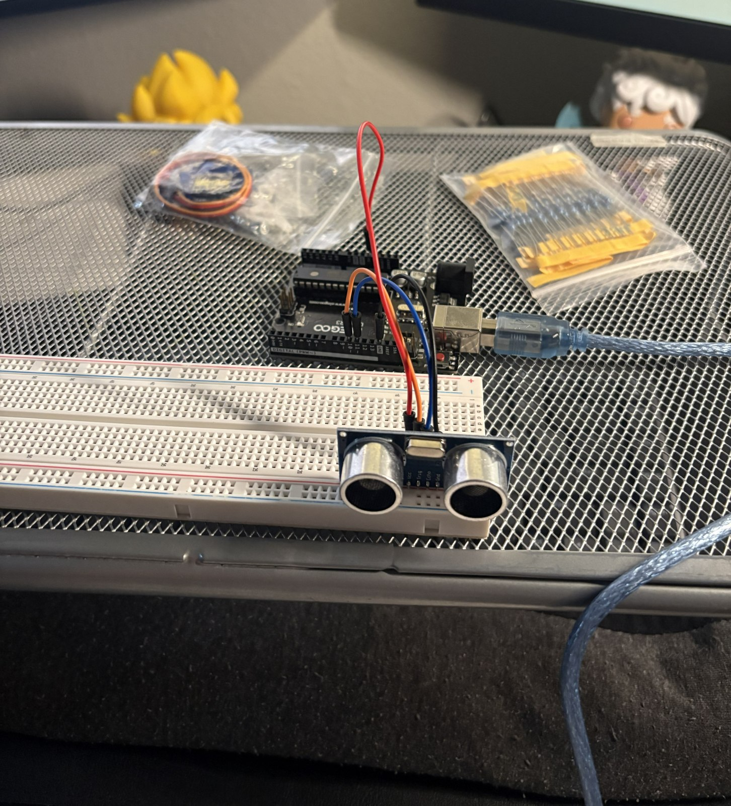
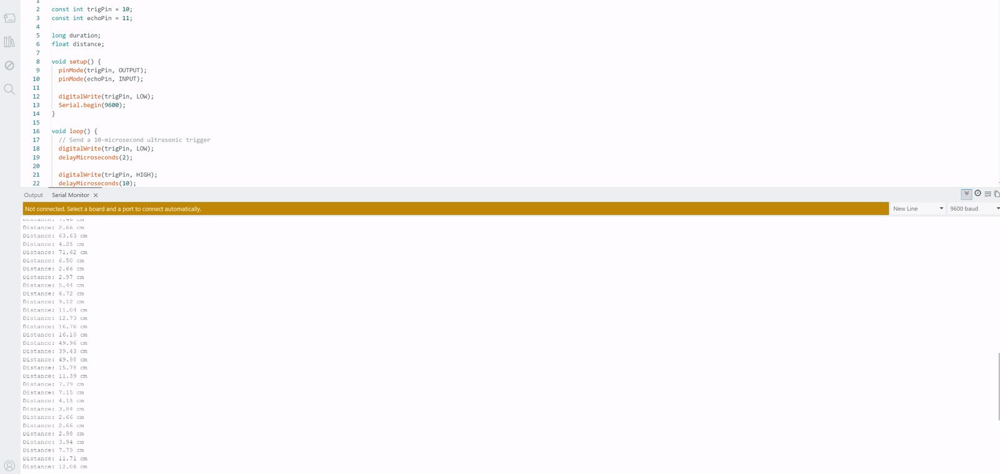

Project Description
For my final project, I’m building a small automatic parking barrier. An HC-SR04 ultrasonic sensor measures how close an object is, and an Arduino Uno moves an SG90 servo when the object enters the detection range. The electronic control is working; the physical barrier arm is still in progress.
My goal: detect objects approximately 15 cm from the sensor, open the gate automatically, keep it open while the object is nearby, and close after the detection area has remained clear for a short delay.
Ideas to add later: LED status indicators, a manual pushbutton override, and more stable distance measurements to prevent unnecessary gate movement.
Status — November 23: HC-SR04 distance sensing and SG90 servo actuation have been tested separately and integrated in an Arduino breadboard prototype. The final physical gate arm has not yet been built.
Video Demo
November 23 integration test: This clip shows the Arduino, ultrasonic sensor, and servo connected for a distance-based control test. The barrier arm has not been attached yet.
Integration-test clip: approximately 18 seconds. I will add the complete gate demonstration after assembling the barrier arm.
System Diagram

Tested prototype signal flow: the HC-SR04 provides distance measurements to the Arduino. The Arduino compares distance readings with an opening threshold and controls the servo's angle. A closing delay is intended to reduce unwanted rapid closing.
Circuit Information
The table below lists the connections used in the November 23 sensor-and-servo prototype. I will draw the final schematic and attach the physical gate arm as the build progresses.
| Component | Pin / connection | Purpose |
|---|---|---|
| HC-SR04 VCC / GND | 5V / GND | Sensor power |
| HC-SR04 TRIG | Arduino D10 | Send ultrasonic pulse |
| HC-SR04 ECHO | Arduino D11 | Measure return pulse |
| SG90 orange (signal) | Arduino D9 | Position control |
| SG90 red / brown | Arduino 5V / GND | Servo power and common ground |
Parts: Arduino Uno, HC-SR04 ultrasonic sensor, SG90 9g servo, breadboard, jumper wires, USB cable, and cardboard or a lightweight model gate arm. LEDs, resistors, and pushbutton are optional stretch goals.
Code
The Arduino program reads the ultrasonic sensor and controls the SG90 servo based on distance. It opens the gate when an object is within 15 cm. After the distance is above 20 cm for two seconds, it returns the servo to the closed position.
Reflection and Future Improvements
What I learned: I first tested the SG90 with the Arduino Servo Sweep example, then checked the HC-SR04 readings in the Serial Monitor. After each part worked on its own, I connected them to the same Arduino and recorded the response. Testing one part at a time made it much easier to identify wiring and code issues.
Next improvements: attach a lightweight gate arm; validate repeatable open/close operation with the arm installed; filter noisy or missing sensor readings; optionally add LED indicators or a manual override. This prototype is only a demonstration model, not a gate for real-world access control.
Project Progress Check In #1 (November 23)
Progress and results
The project is on schedule, and I made more progress than I originally expected at this stage. I tested the SG90 with Arduino's Servo Sweep example. I also tested the HC-SR04 separately: the Serial Monitor displayed changing distance measurements as a hand moved near the sensor. After those tests, I connected the sensor and servo together and recorded an approximately 18-second demonstration. The physical barrier arm has not yet been built.


Video evidence: See the integration-test recording in the Video Demo section.
Research and comparison
SunFounder's Arduino Automatic Barrier Gate Project with Ultrasonic Sensor V2 shows a similar sensor-controlled servo barrier, with a traffic-light LED module and display. My current design uses an HC-SR04 and SG90 with basic distance-triggered control, without indicators or a completed gate arm. I may add LED status indicators after the gate mechanism is complete.
Reference: SunFounder, Arduino Automatic Barrier Gate Project with Ultrasonic Sensor V2, accessed November 23, 2026.
Schedule, risks, and next steps
I met the Check-in #1 goal of testing both components and also got the distance sensor and servo running together. Before Check-in #2 on November 30, I plan to attach a lightweight gate arm, test repeated opening and closing, and adjust the design if the motor struggles under load. Main risks are ultrasonic measurement noise, insufficient servo power, and mounting/alignment of the gate arm.
Project Progress Check In #2 (November 30)
Planned next checkpoint: assemble and test the lightweight physical gate arm; verify sensor-triggered opening and delayed closing with the mechanism attached; and assess reliability, sensor filtering, power requirements, and any revised goals.